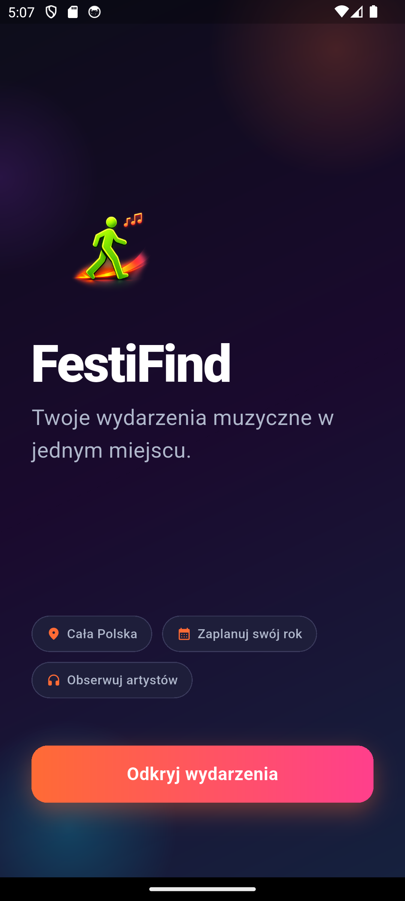
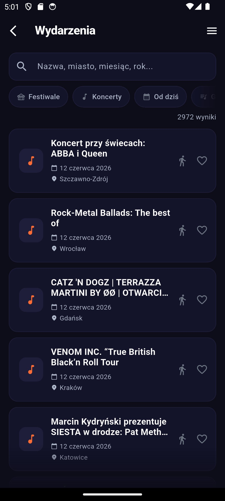
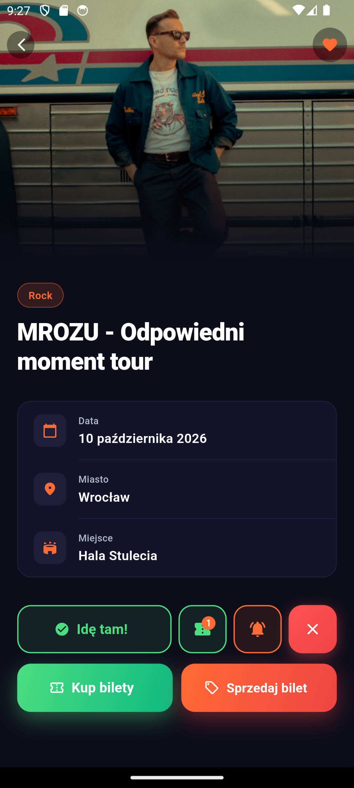
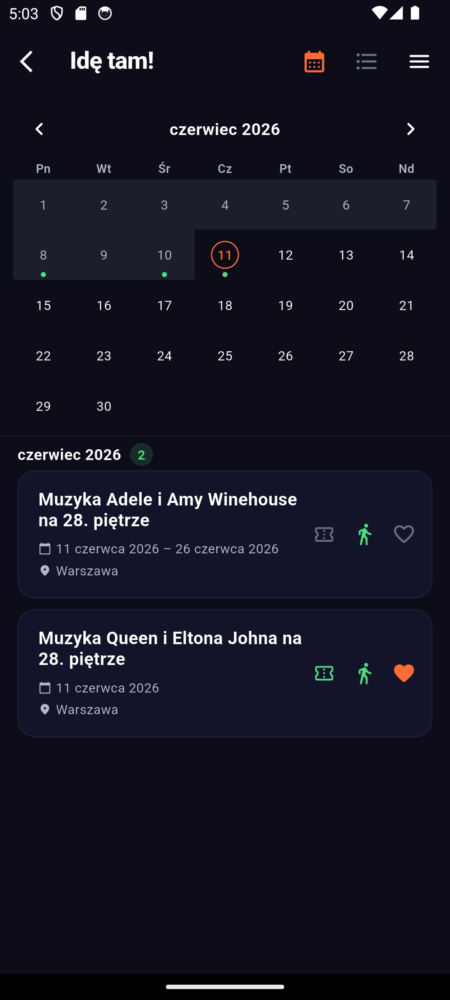
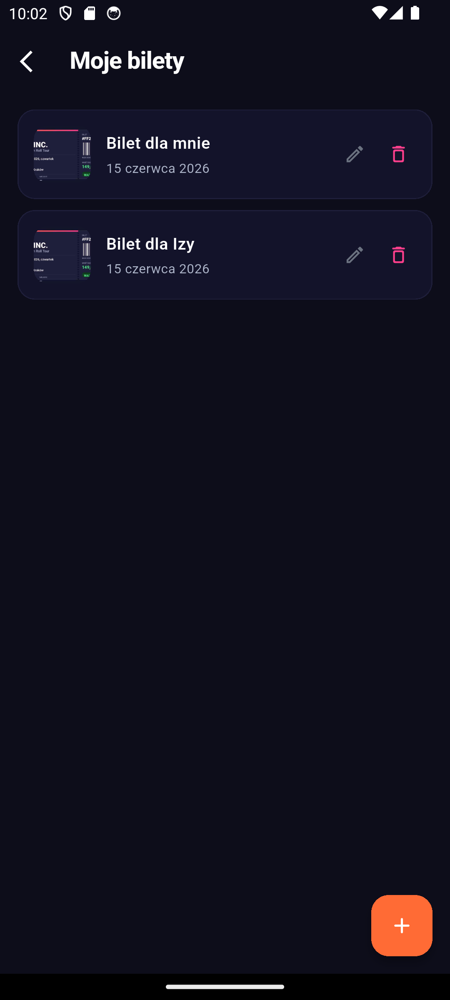
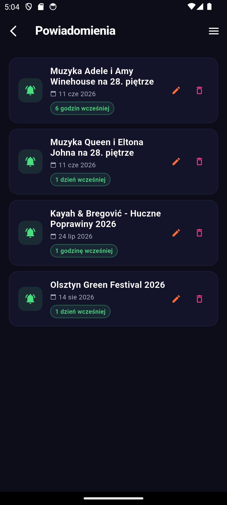

Twoje wydarzenia muzyczne — w jednym miejscu. Your music events — in one place.

Tysiące festiwali i koncertów z wielu miast w Polsce. Filtruj po gatunku, mieście i dacie.Thousands of festivals and concerts from cities across Poland. Filter by genre, city and date.
Dodaj bilet PDF lub zdjęcie do każdego wydarzenia. Koniec szukania po mailach i folderach — masz je offline, razem z planem. Plany się zmieniły? Odsprzedaj bilet przez AleBilet.pl jednym tapem.Attach a PDF or photo ticket to any event — find it offline, right next to your plan. No more digging through emails. Plans changed? Resell your ticket on AleBilet.pl in one tap.
Dane zostają na Twoim telefonie. Zero kont, zero śledzenia, zero serwerów.Your data stays on your phone. No accounts, no tracking, no servers.
Pobierz raz, przeglądaj wszędzie — także bez zasięgu. Żadnych opłat.Download once, browse anywhere — even without signal. No fees.
Festiwale, koncerty, wydarzenia od dziś, gatunki. Szukaj po nazwie, mieście, miesiącu czy roku — i znajdź dokładnie to, na co masz ochotę.Festivals, concerts, events from today, genres. Search by name, city, month or year — and find exactly what you're in the mood for.

Data, miasto, miejsce i gatunek na jednym ekranie. Kup bilety jednym tapem lub — jeśli plany się zmieniły — sprzedaj swój bilet przez AleBilet.pl bez wychodzenia z aplikacji.Date, city, venue and genre on a single screen. Buy tickets in one tap or — if plans change — resell your ticket on AleBilet.pl without leaving the app.

Zaznacz wydarzenia, na które się wybierasz, i zobacz cały swój sezon na kalendarzu — w jednym rzucie oka.Mark the events you're going to and see your whole season on a calendar — at a glance.

Dodaj bilet (PDF lub zdjęcie) do wydarzenia, na które idziesz. Koniec szukania po mailach, czatach i folderach — Twoje bilety masz obok planu, w jednym miejscu i także offline.Attach a ticket (PDF or photo) to the event you're going to. No more digging through emails, chats and folders — your tickets sit next to your plan, in one place and even offline.

Ustaw przypomnienie na kilka godzin lub dzień wcześniej. Obserwuj artystów i frazy — damy znać, gdy pojawi się coś nowego.Set a reminder hours or a day ahead. Watch artists and keywords — we'll let you know when something new shows up.

Tak. FestiFind jest w pełni darmowy, bez reklam i bez płatności w aplikacji.Yes. FestiFind is completely free, with no ads and no in-app purchases.
Nie. Aplikacja działa bez rejestracji i logowania. Wszystkie dane są przechowywane lokalnie na Twoim telefonie.No. The app works without registration or sign-in. All data is stored locally on your phone.
Nie. FestiFind nie zbiera danych osobowych, nie korzysta z analityki ani śledzenia. Ulubione, plany i przypomnienia nie opuszczają urządzenia.No. FestiFind collects no personal data and uses no analytics or tracking. Your favourites, plans and reminders never leave your device.
Tak. Po pobraniu danych przeglądasz wydarzenia bez internetu. Lista odświeża się przy starcie, gdy jest połączenie.Yes. Once data is downloaded, you browse events without internet. The list refreshes on launch when you're online.
Tak. Do wydarzeń z listy „Idę tam!" dodasz bilet w PDF lub jako zdjęcie i otworzysz go offline — Twoje bilety masz w jednym miejscu, obok planu.Yes. You can attach a PDF or photo ticket to events on your "I'm going!" list and open it offline — your tickets in one place, next to your plan.
W ekranie szczegółów wydarzenia znajdziesz przycisk „Sprzedaj bilet", który przeniesie Cię na AleBilet.pl — serwis odsprzedaży biletów w Polsce. FestiFind nie pobiera żadnej prowizji.On the event details screen you'll find a "Sell ticket" button that takes you to AleBilet.pl — a ticket resale platform in Poland. FestiFind takes no commission.
FestiFind jest dostępny na iOS w App Store. Wersja na Androida jest w przygotowaniu.FestiFind is available on iOS in the App Store. An Android version is in the works.
Twoje plany zostają na Twoim telefonie. Zawsze.Your plans stay on your phone. Always.
FestiFind nie zbiera danych osobowych i nie wymaga konta. Ulubione, plany, bilety i przypomnienia nigdy nie opuszczają urządzenia.FestiFind collects no personal data and requires no account. Your favourites, plans, tickets and reminders never leave your device.
Polityka prywatnościPrivacy policy →